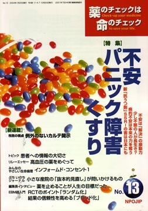

No.13 特集 不安 パニック障害 くすり 2004年1月 発行
そんなに「不安」を怖がらないで
今回は、前回（本誌11号）で話し尽くせなかったこと、とくに「不安」に焦点をあてました。海外からのメッセージは、英国で長年、市民の立場から薬の問題に取り組んでこられた、チャールズ・メダワーさんです。日本でも数年前から使われ始めた新タイプの「抗うつ剤」、いわゆるセロトニン再取り込み阻害剤（SSRI：日本での商品名はパキシルなど）による薬害問題を社会に認知させた中心人物です。
SSRIは本来「抗うつ剤」。ところが「不安」からくる「パニック障害」にも有効とされて急速に使用範囲が拡大しました。その一方で、依存や自殺が服用後短期間で起きていて患者や家族がそのことを訴えているのに、医師によく理解されず危険性の認識が広がらないのです。
メダワーさんの調査ではっきり見えてきた、「不安」に対する新薬SSRIの問題点、患者と医師の副作用のとらえ方の大きな「隔たり」を中心に考えてみたいと思います。
本当に治療の必要な「パニック障害」について梅田忠斉さんに解説してもらいました。
（絶版）
もくじ
■海外からのメッセージ
チャールズ・メダワー氏 （ソーシャル・オーディット代表、英国）
特集
■不安は解決の原動力
■少し不眠の人が長生き？
■「寝起きが悪い」と幼なじみの父親に言ったばかりに…
■病的不安は本来の力を奪う
■新「抗うつ剤」SSRIの害は日本にも
■患者用薬の説明書（NPOJIPの判定付き）
・パロキセチン（パキシル）
連載
■映画の中のクスリ（7） アルコール
■みんなのやさしい生命倫理 １３
インフォームド・コンセント（１） 概説
■編集長インタビュー
瀬川雄介さんに聞く 薬を止めることが人生の目標だった
■Coffee無礼区 孤独と老い
■行ってきました 「第5回薬害根絶フォーラム」
■行ってきました 番外編 「日本脊髄障害医学会で発表してきました」
■リレーエッセイ 高血圧の薬をめぐって
■ぷちいのちジャーナル
小さな産院の「抜本的見直し」が問いかけるもの
■EBM超入門（2）
RCTのポイント「ランダム化」 結果の信頼性を高める「ブラインド化」
新連載
■市民の視点 例外のないカルテ開示
トピック
■患者への情報の大切さ
解熱剤に関するアンケート
■質問箱
Q:喘息の子どもにインフルエンザワクチンは必要でしょうか？
提言
■NPOJIPの提言
薬による重大な被害情報は患者からも受け付けよ
■読者の声
・「二人目を産む前に知りたいこと」
・「睡眠剤は適切な選択と思う」
・「プロトピックに関する情報をありがとう」 など
■書評
・『陣痛促進剤 あなたはどうする』
・『精神科医はいらない』
・『患者対応学』
■NPOJIP関連書籍紹介/TIP出版物
■NPOJIP書籍申込み用紙
■編集後記
病院でよく聞く言葉
（特集にちなんだ言葉を簡潔に解説）忙しい人はまずここから
○インフルエンザ予防と治療 −解熱剤を使わず安静に
○解熱剤 −使うならアセトアミノフェン
○インフルエンザ −大流行はA型
（日本経済新聞に浜六郎が掲載していたものを改変。加筆、新しく追加したものを含む）
質問箱より
喘息の子どもにインフルエンザワクチンは必要でしょうか？
Q.毎号楽しみに興味深く拝読しています。今回の「かぜとインフルエンザ」を読んでぜひ教えていただきたいと思いペンを執りました。
私の子ども（4歳と8歳の男児）は喘息のために吸入ステロイド剤を使っています。かかりつけの先生は喘息があるとインフルエンザにかかった時が大変だからと予防接種を勧めるので、2年くらい前から接種しています。本誌を読むと、予防接種は必要ないと思うのですが、喘息がある場合は違うのでしょうか？
また、インフルエンザになった時には他の人よりも症状は重くなるのでしょうか？その時の対応はどうしたらよいのでしょうか？命を落としたり、後遺症が残ったりということが多いのでしょうか？
12号の特集でも「普段は健康な人は」という前置きがついていたので、余計に不安になってしまいました。どうか良きアドバイスをお願いいたします。
A. ワクチンで喘息の悪化は防げない
インフルエンザワクチンの喘息に対する効果、不利益については、すでにコクランライブラリー（注1）Cates CJという人がシステマティックレビューを掲載しています。その紹介を中心に述べ、回答とさせていただきます。
（注1）1992年に英国に始まり治療・予防に関して世界的規模で展開されている医療評価プロジェクトをコクラン共同計画という。そこで收集・評価された情報の結果をCD-ROMで提供している。これをコクランライブラリーと呼んでいる。
（以下、引用省略）
詳しくは本誌で。
（絶版）